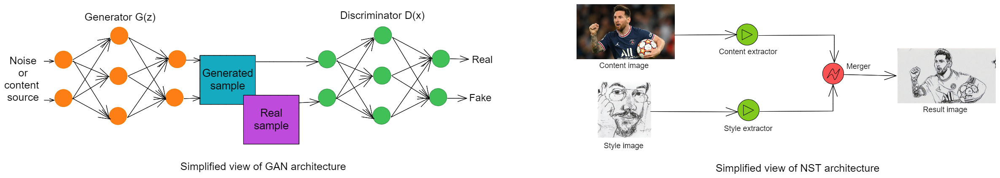
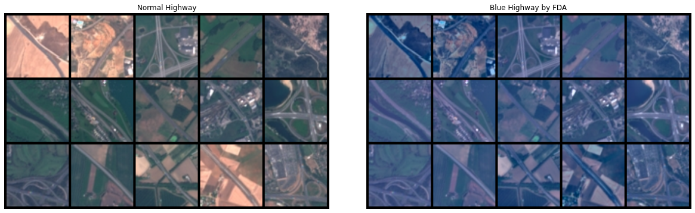
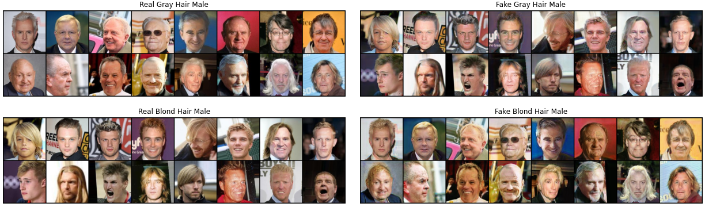

Home
DEEL With Augmentation is a repository which implements several ML techniques to generatively augment the data and that analyzes those methods from a Fairness perspective.
This library includes two types of ML approaches to generate synthetic data to augment your training dataset: Generative Adversarial Networks (GANs) and Style Transfer (ST).

The main focus of this work is to analyze the ability of those methods to efficiently adress bias issues. More specifically, we wanted to check that augmenting a minority group (i.e. a group that is under represented) with those approaches could alleviate the drop in performance for the sensitive group that is usually observable when training a model on the unaugmented dataset. We made a number of experiments on the EuroSat dataset where the minority group is the satellite images with a blue veil and on the CelebA dataset on which multiple minority groups could be defined.
🧪 Experiment Results¶
- DEEL With Eurosat Bias experiment's summary
- DEEL With CelebA Bias experiment's summary
Experiments on Eurosat
| Bias in EuroSAT | Notebook |
|---|---|
| Summary | |
| Fourier Domain Adaptation (FDA) | |
| Style Flow | |
| Contrastive Coherence Preserving Loss for Versatile Style Transfer (CCPL) | |
| Adaptive Instance Normalization (AdaIN) | |
| Neural Neighbor Style Transfer (NNST) | |
| GAN + ST | |
| XAI Attributions | |
| XAI Metrics |

An example of a case where we used FDA to change the style of highway images.
Experiments on CelebA
| Bias in CelebA | Notebook |
|---|---|
| Summary | |
| OpenCV | |
| DCGAN | |
| CycleGAN | |
| ProGAN | |
| All methods (including DDPM) |

An example of a case where we used CycleGAN to change the hair color of male.
🐍 The Augmentation Package¶
In this repository we packaged all the code used for our experiments to allow both: reproducibility and usability as a Python package of the augmentation methods.
Getting Started
Augmentare requires a version of python higher than 3.7 and several libraries including Pytorch and Numpy. Installation can be done using:
git clone https://github.com/deel-ai/augmentare.git
cd augmentare
python setup.py install
Now that Augmentare is installed.
Generative Adversarial Networks Methods
# Augmentare Imports
import augmentare
from augmentare.methods.gan import *
from augmentare.plots.plot_losses import plot_losses_gan
from augmentare.plots.plot_samples import plot_image
All GANs models share a common API. You can find out more about it here.
Style Transfer Methods
# Augmentare Imports
import augmentare
from augmentare.methods.style_transfer import *
from augmentare.plots.plot_losses import plot_losses
All NST models share a common API. You can find out more about it here
Generative Adversarial Networks
The library includes a gan module where various GAN models are available. They all come with explanations, tutorials, and links to official articles:
| GAN Method | Source | Tutorial |
|---|---|---|
| Deep Convolutional GAN (DCGAN) | Paper | |
| Conditional GAN (CGAN) | Paper | |
| Conditional Deep Convolutional GAN (CDCGAN) | Paper | |
| Cycle GAN | Paper | |
| Progressive Growing of GANS (ProGAN) | Paper |
Style Transfer
The library includes a style_transfer module where various Style Transfer approaches are available. They all come with explanations, tutorials, and links to official articles:
| ST Method | Source | Tutorial |
|---|---|---|
| Fourrier Domain Adaptation (FDA) | Paper | |
| Adaptive Instance Normalization (AdaIN) | Paper | |
| Neural Neighbor Style Transfer (NNST) | Paper | |
| Style Flow | Paper | |
| Contrastive Coherence Preserving Loss for Versatile Style Transfer (CCPL) | Paper |
👀 See Also¶
More from the DEEL project:
- Xplique a Python library exclusively dedicated to explaining neural networks.
- deel-lip a Python library for training k-Lipschitz neural networks on TF.
- deel-torchlip a Python library for training k-Lipschitz neural networks on PyTorch.
- Influenciae Python toolkit dedicated to computing influence values for the discovery of potentially problematic samples in a dataset.
- LARD Landing Approach Runway Detection (LARD) is a dataset of aerial front view images of runways designed for aircraft landing phase
- PUNCC Puncc (Predictive uncertainty calibration and conformalization) is an open-source Python library that integrates a collection of state-of-the-art conformal prediction algorithms and related techniques for regression and classification problems
- OODEEL OODeel is a library that performs post-hoc deep OOD detection on already trained neural network image classifiers. The philosophy of the library is to favor quality over quantity and to foster easy adoption
- DEEL White paper a summary of the DEEL team on the challenges of certifiable AI and the role of data quality, representativity and explainability for this purpose.
🙏 Acknowledgments¶

 This project received funding from the French ”Investing for the Future – PIA3” program within the Artificial and Natural Intelligence Toulouse Institute (ANITI). The authors gratefully acknowledge the support of the DEEL project.
This project received funding from the French ”Investing for the Future – PIA3” program within the Artificial and Natural Intelligence Toulouse Institute (ANITI). The authors gratefully acknowledge the support of the DEEL project.
👨🎓 Creators¶
This repository was developed by Vuong NGUYEN as part of his apprenticeship with the DEEL Team under the supervision of Lucas Hervier and Agustin PICARD. He is currently a student in dual engineering degree ModIA program at INSA Toulouse and INP-ENSEEIHT supported by Artificial and Natural Intelligence Toulouse Institute (ANITI).
📝 License¶
The package is released under MIT license.